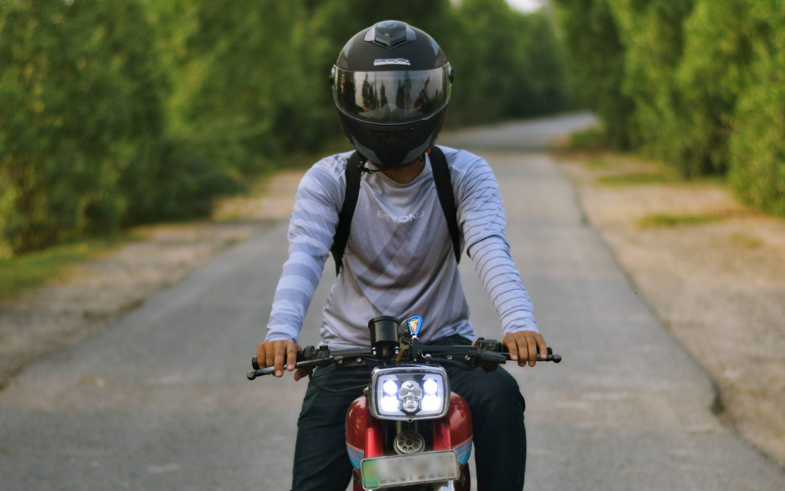
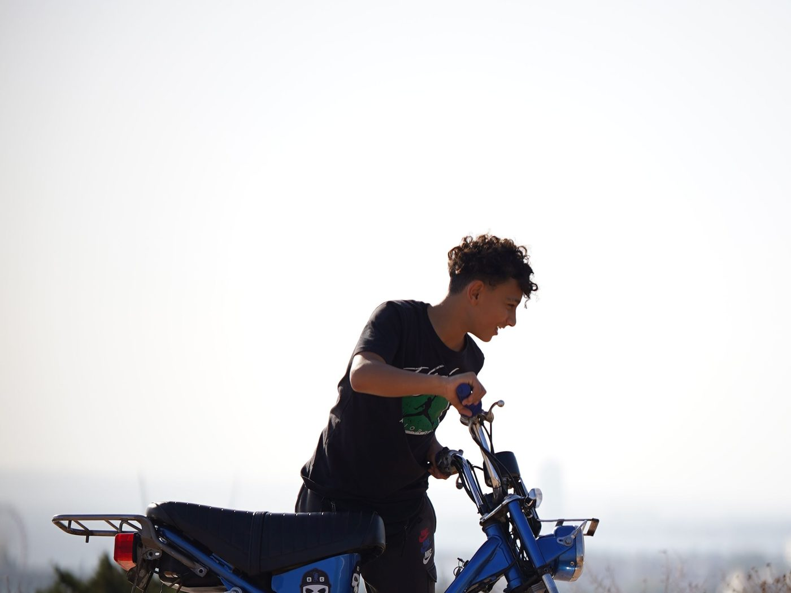
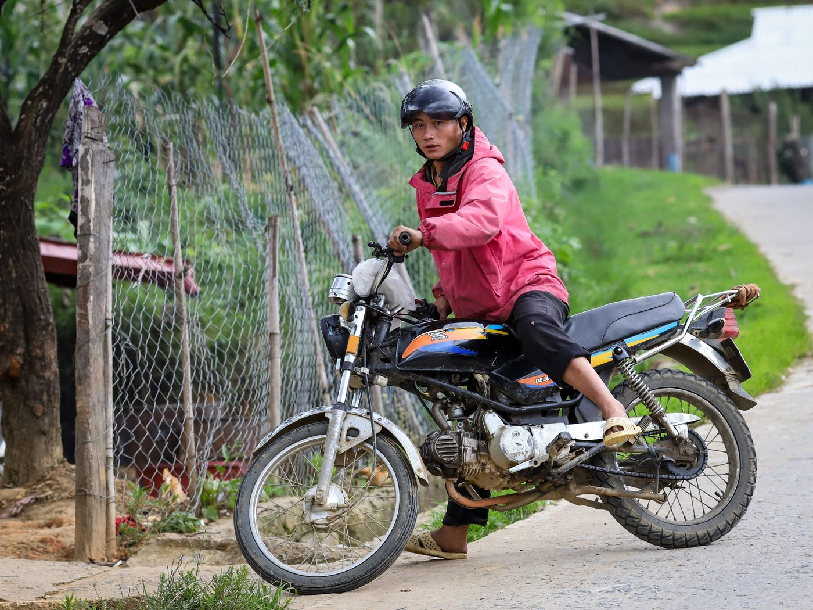

Кому подходит байк 50сс в Нячанге, а кому нет

Мы продаём байки, но продавать их всем подряд смысла нет: человек, которому 50сс не подходит, вернётся с разочарованием, а не с благодарностью. Поэтому здесь — честный фильтр. Сначала кому подходит, потом кому нет.
Кому байк 50сс подходит
Зимовщикам и тем, кто живёт в Нячанге месяцами. Главный сценарий. Свой транспорт на сезон дешевле аренды и не требует каждый месяц возвращаться к вопросу «продлевать или нет». Расчёт — в статье байк на зимовку.
Тем, у кого нет мотоциклетной категории в правах. Это и есть смысл 50 кубов: для транспорта с объёмом до 50 см³ во Вьетнаме мотоциклетная категория не требуется. Оговорка, которую мы всегда проговариваем: ≤50 см³ в техпаспорте — нужное условие, но правила движения, шлем, возраст и условия пребывания соблюдать всё равно нужно, а требования проверять на момент покупки. Подробнее — про права на 50сс.
Тем, кто ездит по городу и ближним окрестностям. Нячанг, набережная, рынки, пляжи, поездки на 20–40 км — это ровно та дистанция, на которой 50сс комфортен.
Новичкам на двух колёсах. Небольшая мощность здесь плюс: байк прощает ошибки и не выстреливает из-под руки. Особенно если брать автомат.
Тем, кто ценит предсказуемость. Одна цена на все байки — 10 000 000 ₫ (≈ 400 $ · 37 000 ₽), без торга, документы и подготовка включены, выдача в Нячанге.

Кому байк 50сс не подойдёт
Тем, кто приехал на неделю-две. Покупка не успеет окупиться, а продажа займёт время, которого у вас нет. Берите аренду.
Тем, кто собирается ездить между городами. Нячанг — Далат, Нячанг — Хойан и подобные маршруты для 50сс не лучший выбор: скорость и запас мощности не те, особенно в горах и на затяжных подъёмах. Про поведение на рельефе есть отдельный разбор — как ездить в гору на 50сс.
Тем, кто каждый день возит двоих взрослых плюс вещи. Вдвоём на 50сс ездят, но на подъёмах и в разгоне это чувствуется сразу. Нюансы — в статье можно ли ездить вдвоём на 50сс.
Тем, кому нужна скорость. 50сс — это про перемещение по городу, а не про динамику. Если хочется обгонять поток на трассе, класс выбран неправильно.
Тем, кто не готов ничего обслуживать. Масло, шины, тормоза, лампы — минимальное внимание всё равно нужно. Поддержки после продажи у нас нет: продали — уехали, дальше байк ваш.
Тем, кто не чувствует себя уверенно во вьетнамском трафике. Это честный стоп-фактор, и лучше признать его сразу. Начните с базовых правил езды во Вьетнаме и решайте после.

Три вопроса, чтобы проверить себя
- Сколько месяцев я здесь? Меньше двух — аренда. Два и больше — покупка становится выгоднее.
- Где я буду ездить? Город и окрестности — 50сс подходит. Междугородние трассы и горы — нет.
- Готов ли я сам продать байк перед отъездом? Если да — покупка работает. Если нет — считайте стоимость владения без возврата части денег.
Если на все три ответ в пользу покупки — дальше выбор простой: автомат или полумеханика и какой из байков в наличии удобнее лично вам.
Если сомневаетесь — приезжайте посмотреть
Осмотр — по согласованию с оператором, юг Нячанга, ежедневно 9:00–21:00. Можно приехать, посидеть на байке, проехать пару минут и решить на месте. Не подошло — без обид, мы никого не уговариваем: цена фиксированная, скидки за быстрое решение не существует, торопить вас нечем.
Коротко
Байк 50сс — это городской транспорт для тех, кто живёт в Нячанге месяцами и кому важно ездить легально без мотоциклетной категории. Для коротких приездов, дальних трасс и постоянной езды вдвоём с грузом он не лучший выбор, и мы предпочитаем сказать это заранее. Что сейчас есть в наличии — в каталоге, а что входит в цену — в статье байк за 10 000 000 ₫.